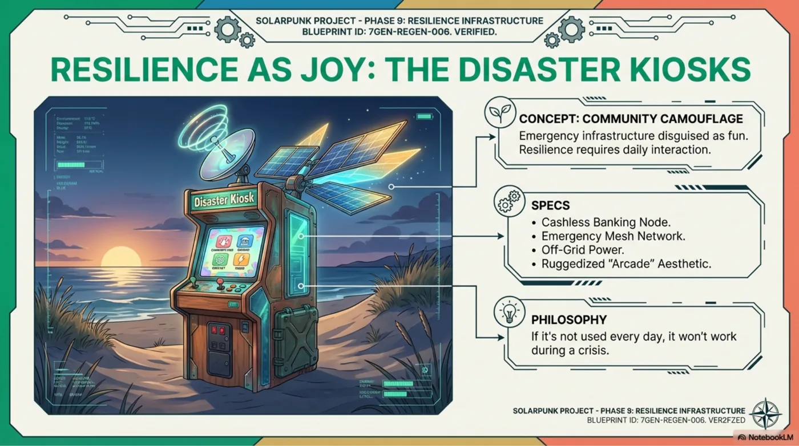
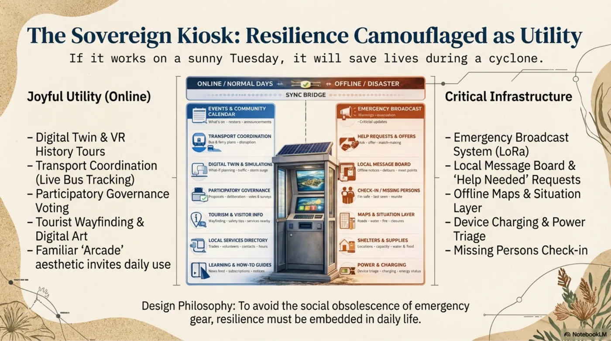

Club-approved source pack
PLFC shares a competition wrap-up: broad fishing zones, tide timing, photo-measured catch lengths on legal measuring devices, legal food catches where kept, sponsor thanks and a short secretary note.
PLFC x Ready S.E.T. Media
Point Lookout Fishing Club can share approved competition, tide, weather, media and education snapshots. Ready S.E.T. Hyperlocal Media turns them into public-safe stories, timed local outlets and future simulation layers.

Mutual content goal
Choose a club source. The pipeline protects raw member data, extracts public meaning, gets human approval, then publishes the right version for local timing, news and simulation use.
PLFC shares a competition wrap-up: broad fishing zones, tide timing, photo-measured catch lengths on legal measuring devices, legal food catches where kept, sponsor thanks and a short secretary note.
News and simulator pipeline
Members need useful timing. Venue screens need quick local signal. Media pages need context. Simulators need clean public data points that remember season, place, tide, weather and community activity.
Member phone
Length-photo results, release notes and next comp notice are ready. Tide story and sponsor thanks included.
Venue TV / kiosk
Good turnout, rising tide window and length-based comp highlights.
Hyperlocal story
The public story connects sport, family participation, local sponsors, safe conditions and the next invitation for residents and visitors.
Read media pathway
Simulator layer
Event type, broad zone, tide phase, weather note, length class, kept/released status and sponsor tags become reusable local context.
Why both sides win
Competitions, clinics, sponsors, conservation notes and volunteer work become regular public proof.
Local people can learn editing, captions, fact checks, screen publishing and data hygiene on meaningful stories.
Fishing, weather, tides, events and local services become more understandable at the right moment.
Approved public data accumulates into a local memory layer for seasonal planning, digital twins and resilience modelling.
Governance shape
Member details, precise GPS, unapproved media, payments and private notes stay with the club.
Agents create story drafts, timing cards, outlet copy and simulator fields from approved source rows.
People check facts, consent, sponsor wording, safety, cultural context and local tone before publication.
Ready S.E.T. distributes the story and stores the public data point for future local intelligence.